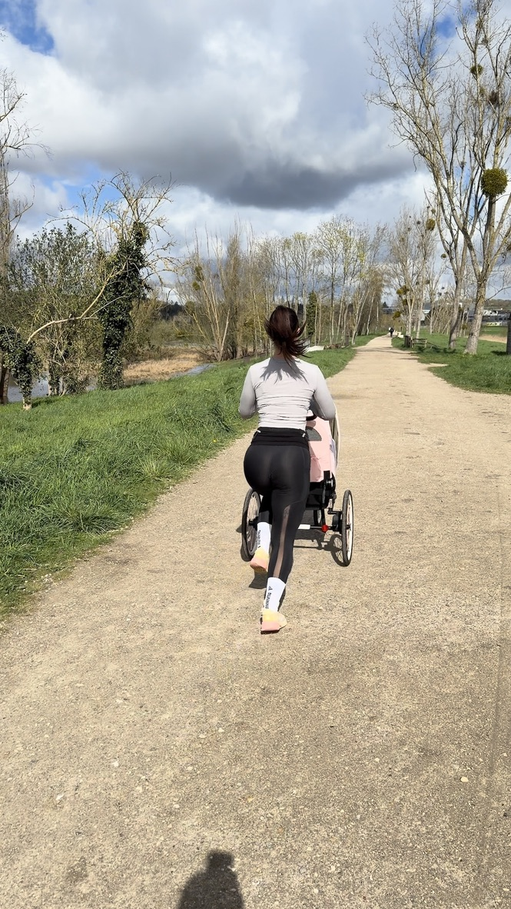

Qui je suis
Ancienne athlète de compétition. Maman. Coach certifiée.
Avant ma grossesse, le sport était ma vie. Puis tout s'est arrêté brutalement — vomissements, menace d'accouchement prématuré, hospitalisation, alitement forcé. Pendant des semaines, zéro mouvement.
Après l'accouchement, j'ai regardé mon ventre et je ne me reconnaissais plus. J'ai tout repris depuis zéro — pas comme avant, mais mieux qu'avant.
Aujourd'hui coach BPJEPS, je suis la seule à t'accompagner avec une méthode que j'ai testée sur mon propre corps, en post-partum réel. Pas de la théorie. Du vécu.
Ornella 🌿